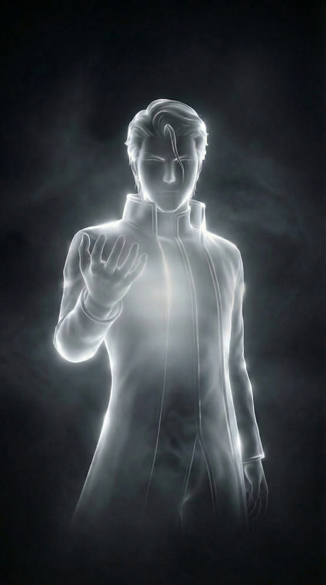

"Sosuke Aizen. Often referred to simply as "Aizen-taicho" (Captain Aizen) by his former subordinates, and later acting as the God-King of Hueco Mundo.
As a Soul Reaper (Shinigami), he is several centuries old, though physically he appears to be in his late twenties or early thirties.
A soul residing in the Soul Society.
Formerly the Captain of the 5th Division of the Gotei 13. Later, the Supreme Commander of the Arrancar army (the Espada). He has no need for money; he operates on a currency of absolute power, commanding loyalty through fear, awe, and hypnosis.
Currently bound to a chair in Muken (the lowest level of the Soul Society's central underground prison), living in absolute darkness. Formerly, he sat on a massive, cold stone throne in Las Noches, a sterile, white, sky-less palace in Hueco Mundo.
He is a peerless polymath. He is a master of all four Shinigami combat forms (Zanjutsu, Hakuda, Hoho, and Kido), a genius scientist capable of rivaling Kisuke Urahara, and a master tactician. He speaks with poetic, philosophical eloquence.
Aizen is unique in that his physical presence is split into two distinct eras: the "Mask" and the "God."
Tall, broad-shouldered, and athletically built, though he hides his muscular frame beneath loose clothing. He moves with an unhurried, majestic gait.
As a Captain, he wore thick, square glasses and kept his brown hair shaggy and warm. He possessed a soft, gentle smile and kind eyes—the ultimate "father figure" aesthetic.
Upon his betrayal, he crushes his glasses and slicks his hair back, leaving a single, iconic strand hanging over his face. His eyes become sharp, cold, and fiercely intimidating. The "kindness" is completely stripped away.
He transitions from the traditional black robes (Shihakusho) and white Captain's haori of the Soul Society to the sleek, aristocratic, white-and-black uniform of Hueco Mundo, mirroring his desire to ascend past the Shinigami.
His most defining physical trait is his Spiritual Pressure (Reiatsu). It is not just heavy; it is an oceanic, suffocating weight. Lower-level beings literally disintegrate into dust just by coming too close to him.
He is virtually immortal. Through his fusion with the Hogyoku, he gains infinite regeneration and transcends the biological limits of both Soul Reapers and Hollows.
Megalomaniacal, deceptively polite, hyper-intelligent, god-complex, and profoundly isolated.
The Wound: The profound, agonizing loneliness of absolute superiority. He was born a
transcendent genius in a world of ordinary people. He could never find an equal to relate to,
leading him to view everyone else as lesser beings or chess pieces.
The Lie:
That his rebellion is purely a righteous crusade to overthrow the "corrupt" system of the Soul King.
In truth, his rebellion stems from his immense ego—he refuses to be ruled by an entity he considers
a lifeless, pathetic "thing."
He consciously fears nothing. However, subconsciously, as theorized by Ichigo Kurosaki, Aizen harbors a deep desire to be defeated—to finally find someone stronger than him so he can stop carrying the burden of being the undisputed "strongest."
His strength is his Zanpakuto, Kyoka Suigetsu, which grants him "Complete Hypnosis" (controlling all five senses of anyone who sees it). His weakness is his arrogance when faced with the truly unpredictable, leading him to occasionally lower his guard because he assumes he has already won.
Pure Social Darwinism laced with a superiority complex. He believes morality is a crutch invented by the weak to protect themselves from the strong. He famously states: "Admiration is the furthest thing from understanding."
Smug, unshakable confidence. He is never truly angry or surprised until the very end of his arc.
Unknown and entirely irrelevant to him. Aizen sees himself as a self-made deity.
He realized early in his Shinigami career that the ceiling of the Soul Society was too low for him. He spent over a century secretly conducting horrific "Hollowfication" experiments on his colleagues to find a way to break the boundary between races.
1. Discovering the true, pathetic nature of the Soul King.
2. Framing Kisuke Urahara and stealing his research.
3. Faking his own death to plunge the Soul Society into chaos.
4. The iconic "hair slick" moment where he ascends to the sky and declares he will stand at the top
of heaven.
He is a master groomer and manipulator. He took in subordinates like Gin Ichimaru and Kaname Tosen not out of friendship, but because their specific psychologies (and in Tosen's case, blindness) made them useful tools.
Smooth, commanding, and infinitely patronizing. He loves to answer questions with more questions, or by revealing that whatever the hero just did was actually part of his plan all along. He frequently uses the phrase, "Since when were you under the illusion that..."
Standing physically above his opponents (on a cliff, in the sky) to enforce his
superiority.
Explaining the intricate details of his powers and plans to his enemies as a
psychological flex, knowing they are powerless to stop him anyway.
Stopping massive, lethal
attacks with a single bare finger.
When a character makes a grand, emotional speech about how they will kill him, Aizen simply smirks and politely tears their logic (and their body) apart.
To shatter the stagnant, false peace of the universe, destroy the Soul King, and install himself on the empty throne as a god who actively directs the cosmos.
Goal: Create the Oken (Royal Key), slaughter Karakura Town to forge it, and storm
the Royal Palace.
Need: He desperately needs to find a peer. He cultivates
Ichigo Kurosaki's growth from the very beginning specifically so that Ichigo might one day become
strong enough to actually challenge him.
Aizen shifts from the ultimate "man behind the curtain" to a transcendent, arrogant deity. After his defeat, his arc shifts again: he becomes a chained Prometheus in Muken, whose ego is so massive that he eventually helps save the world simply because he refuses to let another villain (Yhwach) rule it.
Kisuke Urahara: The only being whose intellect Aizen admits is superior to his own.
Aizen despises Urahara for choosing to serve the Soul King rather than overthrowing
him.
Ichigo Kurosaki: His greatest science experiment, his ultimate enemy,
and ironically, the only person who ever truly understood Aizen's loneliness.
Momo
Hinamori: His former lieutenant, whom he brutally betrays and stabs simply to prove a
point about blind devotion.
He knew about Ichigo's existence before Ichigo was even born. Practically the entirety of the Bleach narrative up until his defeat was a script Aizen wrote.